Tutorial 17 — Combining Inkscape Graphics and Gimp or
Photoshop Images
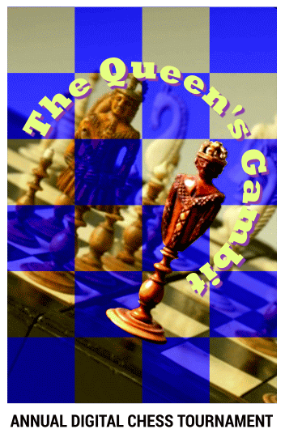
You can easily add an
image created in an image-editing program to an Inkscape file. This is an
effective method for seeing how a photograph looks incorporated with a
line drawing or for trying out an Inkscape special effect on bitmap
images.
In this lesson, you’ll learn how to do the following:
Differentiate between vector and bitmap graphics.
Import embedded Gimp and Photoshop® graphics in an Inkscape file.
Combining Artwork
You can combine Inkscape artwork with images from other graphics
applications in a variety of ways for a wide range of creative results.
Sharing artwork between applications lets you combine continuous-tone
paintings and photographs with line art. Even though Inkscape lets you create
certain types of raster images, Gimp and Photoshop excel at many image-editing
tasks; once done, the images can then be placed in Inkscape.
To illustrate how you can combine bitmap images with vector art and work
between applications, this tutorial steps you through the process of creating
a composite image. In this tutorial, you will add bitmap images created to a
postcard created in Inkscape. Then you’ll adjust the color in the photo,
mask the photo, and sample color from the photo to use in the Inkscape
artwork. You’ll update a positioned image and then export your postcard
to Gimp to complete the type treatment.
Vector Versus Bitmap Graphics
Inkscape creates vector graphics, also called draw graphics, which are
made up of shapes based on mathematical expressions. These graphics consist
of clear, smooth lines that retain their crispness when scaled. They are
appropriate for illustrations, type, and graphics, such as logos that may be
scaled to different sizes.
Bitmap images, also called raster images, are based on a grid of
pixels and are created by image-editing applications such as Gimp and Adobe
Photoshop. In working with bitmap images, you edit groups of pixels rather
than objects of shapes. Because bitmap graphics can represent subtle
gradations of shade and color, they are appropriate for continuous-tone
images such as photographs or artwork created in painting programs. A
disadvantage of bitmap graphics is that they lose definition and appear
jagged when scaled up. You can see the ragged the edges are in the rasterized
image below.
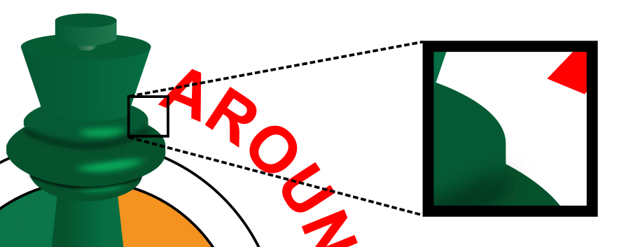
Logo drawn as vector art.
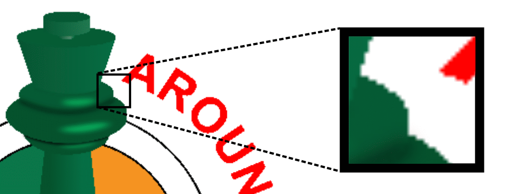
Logo rasterized as bitmap art.
In deciding whether to use Inkscape or a bitmap image program such as Gimp
for creating and combining graphics, consider both the elements of the image
and how the image will be used. In general, use Inkscape if you need to
create art or type with clean lines that will look good at any magnification.
In most cases, you will also want to use Inkscape for laying out a design,
because Inkscape offers more flexibility in working with type and with
reselecting, moving, and altering images. You can create raster images in
Inkscape but its pixel-editing tools are limited. Use Gimp or Photoshop for
images that need pixel-editing, color correcting, painting, and other special
effects.
Getting Started
Download art file Tutorial17_end.svg and store it in a
convenient location.
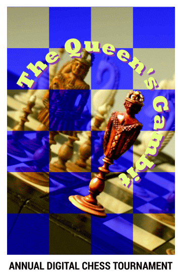
Tutorial 17 finished artwork.
Start Inkscape.
Choose View > Zoom > Zoom Out to make the finished artwork
smaller, adjust the window size, and leave it on-screen as you work. (Move
the artwork where you want it in the window.) If you don’t want to
leave the image open, choose File > Close.
Now download the starting art file Tutorial17_start.svg and
store it in a convenient location.
Now you’ll open the start file to begin the lesson.
Choose File > Open, and open the Tutorial17_start.svg file.
The file has been prepared with three layers: the Text layer, and two
additional layers: Layer 1 and Checkerboard, on which you’ll place
images. Checkerboard also contains objects that you’ll make into a
mask.
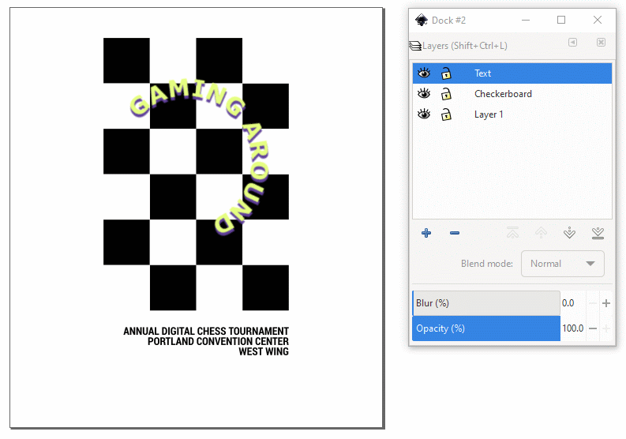
Tutorial 17 starting artwork.
Choose File > Save As… and name the file
Postcard.svg.
Importing an SVG (Scaled Vector Graphics) Image File
You’ll begin by placing an SVG image file in the
Inkscape document as an embedded file. Imported files can be embedded or
linked. Embedded files are added to the Inkscape file, and the Inkscape file
size increases to reflect the addition of the imported file. Linked files
remain as separate, external files, with a link to the imported file in the
Inkscape file. (The linked file must always accompany the Inkscape file, or
the link will break and the imported file will not appear in the Inkscape
artwork.)
Remember that SVG stands for Scaled Vector
Graphics which means that drawings are mathematical expressions that a
graphics program, such as Inkscape and Adobe Illustrator® can understand
and render (that is, draw) precisely, no matter how large or small the artwork
is.
Click on the Layers icon () in the Tool Controls Bar to make
the Layers dialog box active. Resize the dialog box to make all the
layers visible if needed.
In the Layers dialog box, select the Checkerboard layer.
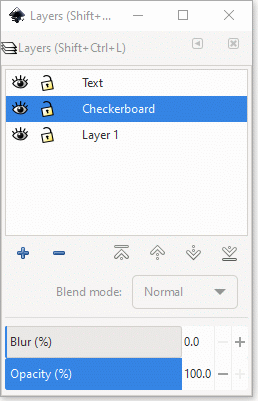
Selecting the Checkboard layer.
When you import an image, it is added to the selected layer.
You’ll use the Checkerboard layer for the imported image, because the
layer includes artwork for a mask for the image that you’ll create
later in the tutorial.
Download art file Chess.svg
and store it in a convenient location.
Now choose File > Import…
When the Select file to import dialog box appears, navigate
to the Chess.svg file, select it, and click on the Open
button.
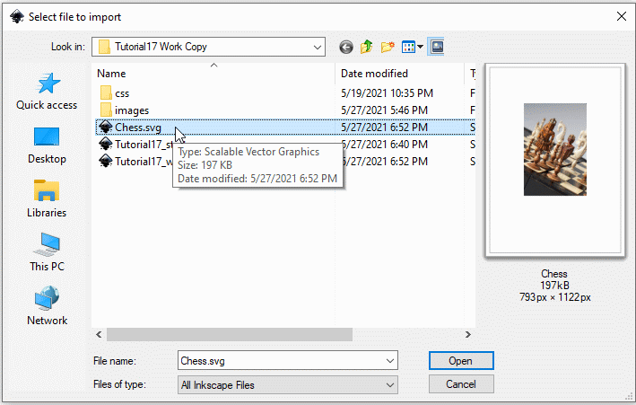
Select file to import dialog box.
The SVG input dialog box appears. Leave DPI for rendered
SVG and Image Rendering Mode at their default settings.
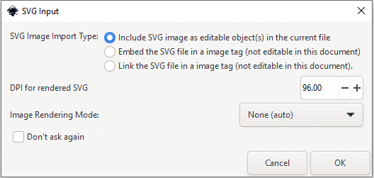
SVG input dialog box.
Click the OK button. The image is imported onto the
Checkerboard layer. In the figure below, it is placed at the upper left
corner of the checkerboard. You can see that, like the checkerboard, the
imported image of the chess pieces lies underneath the text, which lies in
the Text layer above. It is as if you are working with tracing paper.
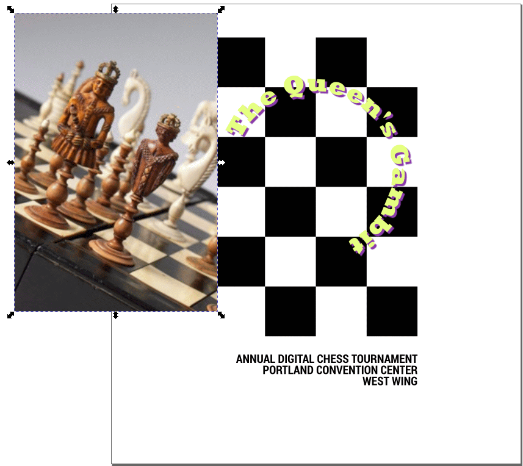
Bitmap image file imported and placed in the Checkerboard
layer.
The image you just imported contains two grouped components:
the background chessboard and chess pieces, and a masked image of the chess
Queen piece, cut out and positioned exactly ontop of the image of the Queen
in the background image.
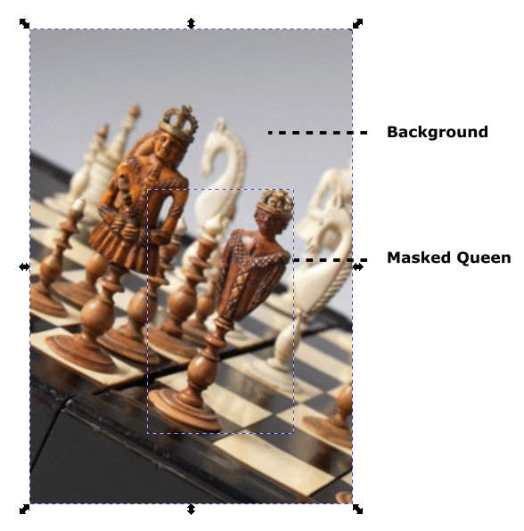
SVG input file.
Now you’ll move the imported images, using Snap tools to
place the image precisely.
Make the Snap Controls Bar active. Choose View > Show/Hide >
Snap Controls Bar is it is not visible or has been iconified.
Click on the Enable snapping (%) (), Snap bounding boxes (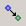), and Snap bounding box corners () icons.
Click-drag the imported image until one of its corners coincides
with its corresponding corner on the checkerboard image. The snap function
will alert you when the image corner is close enough to an underlying corner
to be snapped precisely into place. The square with dashed-line sides is an
artifact of the positioning process.
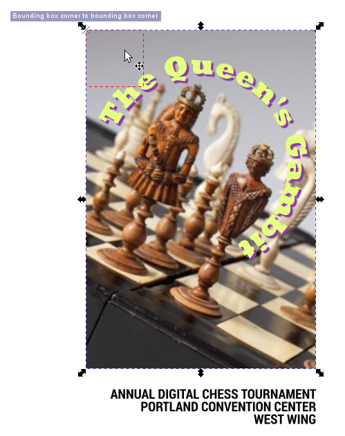
Positioning the imported image.
Now you will move the image below the checkerboard, and duplicate
it.
Duplicating an Imported Image
You can duplicate placed images just as you do other objects in an
Inkscape file. The copy of the image can then be modified independently of
the original.
Now you’ll duplicate the Chess.svg image in the Layers
palette and move it into its own layer.
Click on the Unlocked Layer icon ()
for the Text layer to toggle it locked () so the
text won’ be accidentally manipulated as you work.
Make the Checkerboard layer the active layer, if it isn’
already, and click on the background image.
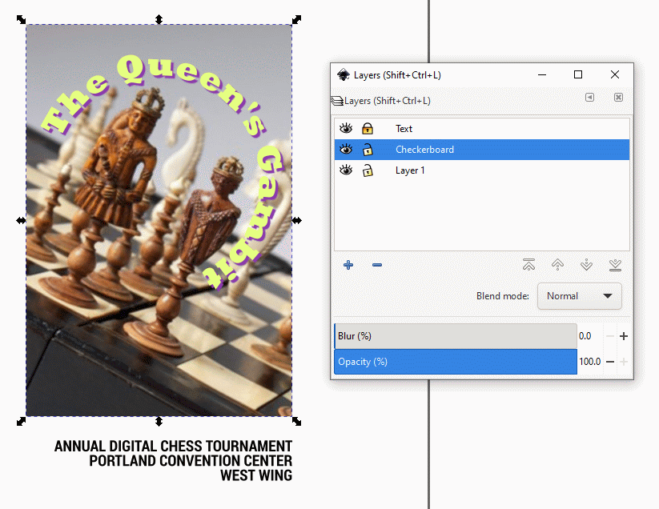
Making the Checkerboard layer active.
With the background image selected, press
<Shift>-<Ctrl>-G to ungroup the background image and the Queen
chess piece image. Do not click on the Queen chess piece. The Queen
chess piece is a separate image apart from the background and is to remain
on the Checkerboard layer.
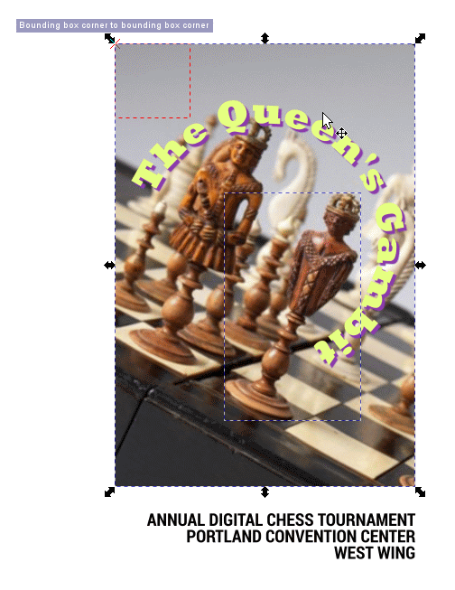
Ungrouping the background and Queen chess piece
images.
Click off the artwork to deselect it and then reselect the background
image. Don’t select the Queen image. You will move only the
background.
Choose Edit > Duplicate to duplicate just the background.
Press <Shift>-<PgDn> to move the background image down to
Layer 1. The Layer 1 bar becomes highlighted, indicating that it is now the
active layer.
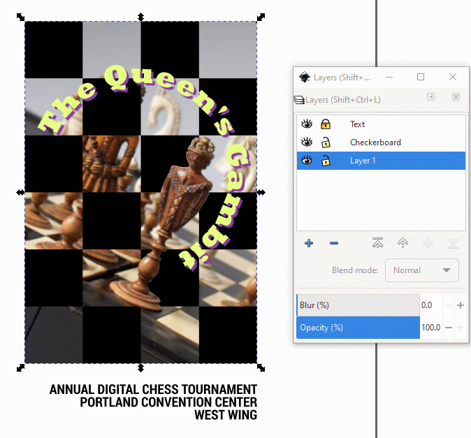
Moving the duplicate background to Layer 1. Layer 1 becomes
highlighted.
Hide the top Text layer and Checkerboard layer, leaving
only Layer 1 showing to verify that the duplicate Background image
did indeed move to the bottom layer.
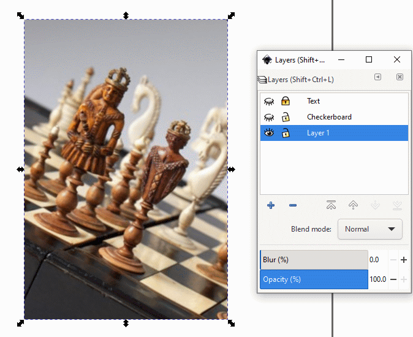
Checking that the background image did move to
Layer 1.
Click on the Layer 1 label in the Layer 1 bar and
rename the layer Blue Chess. You will shortly colorize the duplicated
background with a blue hue.
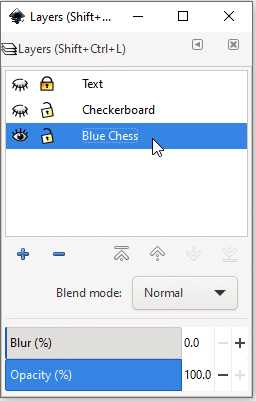
Layer 1 renamed to Blue Chess.
You will now take the imported original background and chess piece
images and put them into new layers below the Checkerboard layer.
Make the Checkerboard layer active again by clicking on its
Layer bar in the Layers palette.
Click on the Create a new layer plus sign icon ().
When the Add layer dialog box appears, select Below
current and label the new layer Background.
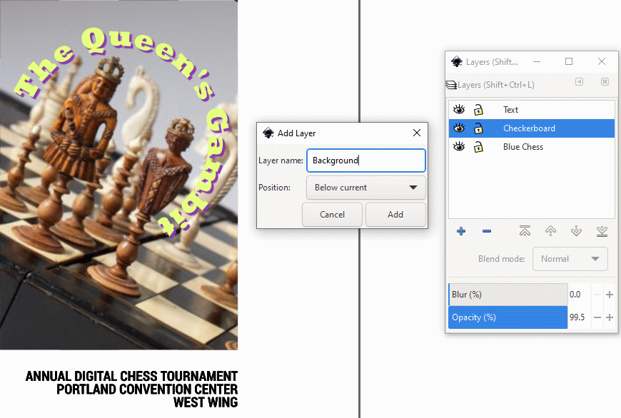
New layer created to house the background
image.
Click on the Add button. The Layers palette now shows
Background as the next layer down from the Checkerboard
layer.
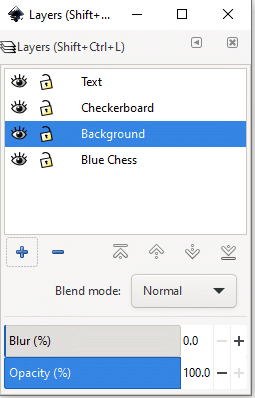
New layer down in the layer stack.
You will now move the background image down to the Background
layer.
Click on the background image (and not the Queen chess piece image). The
Checkerboard layer bar is now highlighted, indicating that it is now
the active layer.
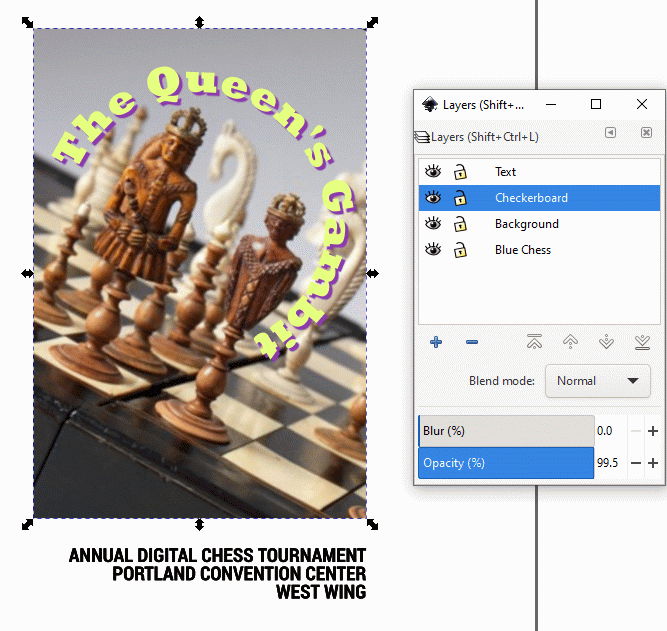
Selecting the background image.
With the background image selected, choose Layer > Move Selection
to Layer Below. The Background layer bar is now highlighted.
The checkerboard and Queen chess piece are now visible.
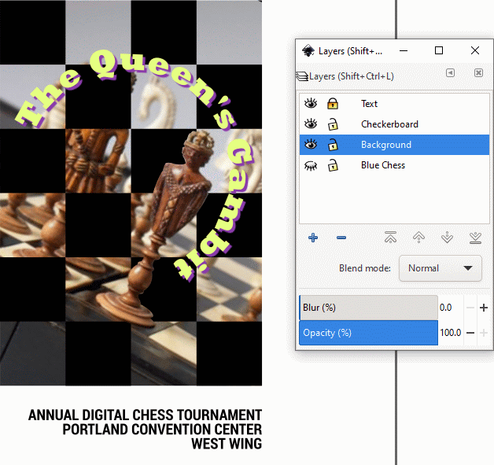
Moving the background image to its own layer.
Move the Queen chess piece onto its own layer.
Select the Checkerboard layer bar in the Layers
palette.
Click on the Create a new layer plus sign icon ().
Choose Below current in the Position text box and label
the new layer Masked Queen.
Click on the Add button.
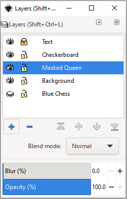
Adding the Masked Queen layer.
Click on the Queen chess piece to select it.
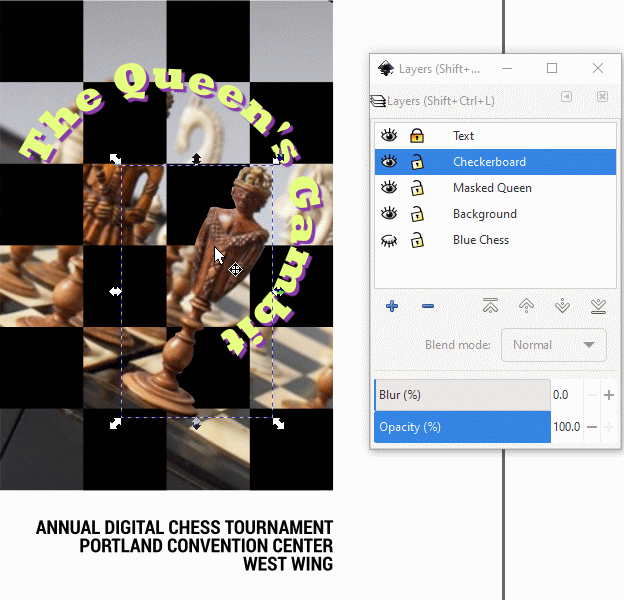
Selecting the Queen chess piece.
Press <Shift>-<PgDn> to move the Queen chess piece down
in the layer stack to the Masked Queen layer. The Masked Queen
layer bar highlights, indicating that it is the active layer.
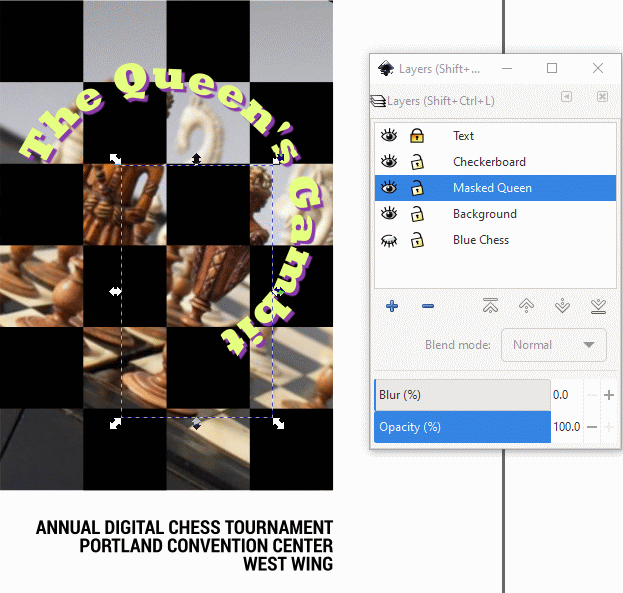
Moving the Queen chess piece image to its own
layer.
You can now see the stacking order of the layers: 1) Text topmost,
2) Checkerboard image, 3) Masked Queen chess piece, 4) Background, and
finally, 5) the bottommost background image (Blue Chess) which is not
visible under the overlying Background image.
Layer break-down.
Choose File > Save.
Adjusting Color in a Bitmap Image
You can use filters to modify colors in bitmap images in a variety of ways.
You can use filters to convert to a different color mode (such as RGB, CMYK,
or grayscale) or to adjust individual color values. You can also use filters
to saturate or desaturate (darken or lighten) colors, or invert colors
(create a color negative).
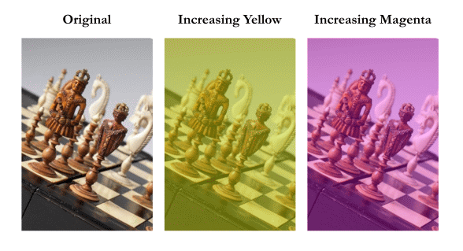
Colorizing an imported image file using color
filters.
In this section, you’ll adjust colors in the background
chessboard image in the Checkerboard layer. Later in this tutorial,
you’ll apply a mask to this image and then adjust colors in the Blue
Chess layer so that the two layers appear in contrasting colors through the
mask.
In the Layers palette, select the Background layer.
Click the eye icon to all the layers except the
Background layer to hide them.
When you hide a layer, all objects on that layer are deselected, hidden,
and locked.
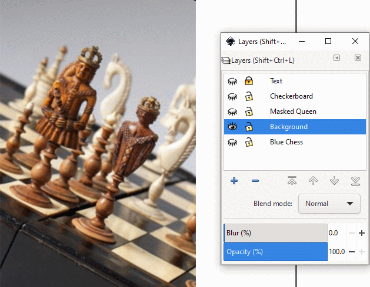
Hiding all but the Background layer.
Make the Background layer active if it isn’t already
and select the background image.
You will now colorize the image with a strong yellow hue.
Choose Extensions > Raster > Colorize… and click on the
CMYK tab. Move the Y slider to 100 for 100 percent
yellow and the A slider to 28 for 28% opacity. Check the
Live preview checkbox to see the filter effect before you set the
filter values.
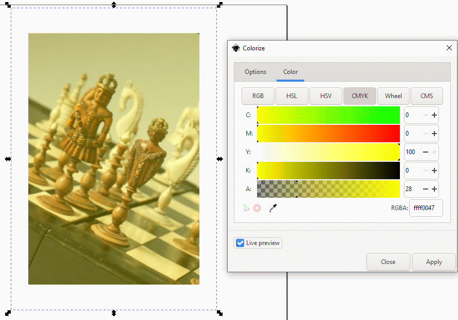
Colorizing the background image yellow.
The Raster option was chosen in the Extensions menu
because the image is a rasterized (pixel-based) jpeg image.
Click on the Apply button, then the Close button.
Click outside the image, and then choose File > Save.
Click the eye icon to all the layers to unhide them.
You can now review your current piece of artwork.
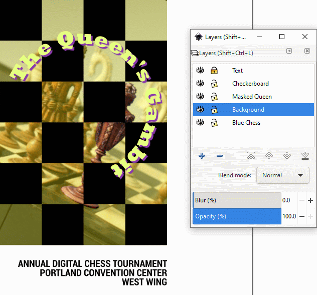
Current artwork.
Masking an Image
Masks crop part of an image so that only a portion of the image appears
through the shape of the mask. You can make a mask from a single path or a
compound path.
Creating Compound Path and Opacity Masks
In this section, you’ll create a compound path from the checkerboard
pattern on the Checkerboard layer and create an opacity mask from the
compound path, so that the Background layer appears through the mask. Then
you’ll adjust the colors in the Blue Chess layer to contrast with the
Background layer.
Click on the eye icon of all the layers in the Layer palette
except for the Checkerboard layer.
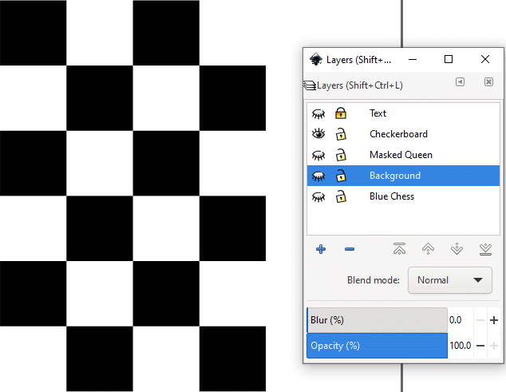
Keeping only the Checkerboard layer visible.
Select one of the black squares.
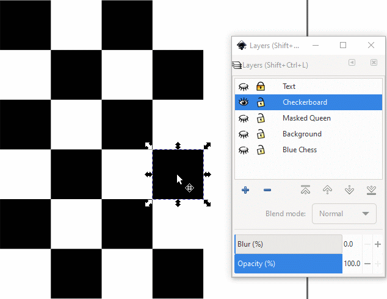
Selecting a black square.
Choose Edit > Select Same > Fill and Stroke. All the black
squares become selected.
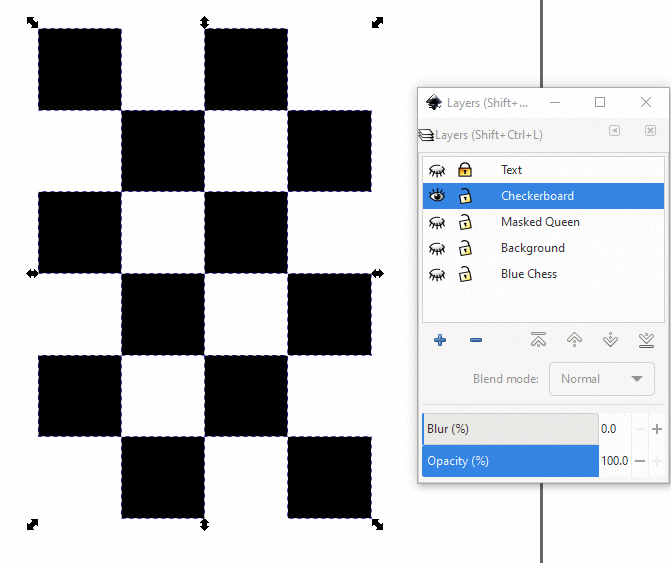
All black squares selected.
Choose Path > Object to Path. Right now you’ see no
changes, but Inkscape no longer “sees” the squares as square
objects but as a collection of paths and nodes.
Choose Path > Combine. The square paths have been merged into one
compound path, which can be used as a mask.
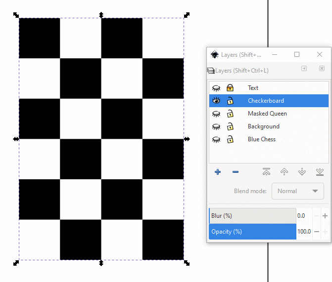
Combining paths. Note that individual squares no longer
have their own bounding boxes.
Note: the Mask function will work only when the mask is a
single item, that is, a single object. You make separate individual objects
into one either by grouping them using the Group selected objects
function or by converting the objects into paths and then using the
Combine paths function.
Combined paths act just like grouped objects. The only difference lies
behind the scenes. Inkscape still “sees” grouped objects as,
indeed single objects that have been collected together to form a compound
entity in which all of its components are still recognized as squares,
circles, and other shapes that will still have their shape identity if that
group is ungrouped — you will get all of your original shapes back
again.
On the other hand, objects that have been converted into paths have lost
all of their shape attributes and are “seen” only as collections
of lines, curves, and nodes. When combined into a single compound path, that
entity is still a collection of lines, curves, and nodes. Combined paths can
be broken apart using the Break apart path function, but the result
is still a collection of lines, curves, and nodes, but with no shape
information.
Path effect functions work on paths. Some of these functions first
convert an object with shape information into a path because that is how
they work. They won’t work on objects containing shape information.
That is simply how those functions have been put together. Yet, you can
manipulate those converted objects in ways that you can’t with
regular shape tools.
Click off the artwork to deselect it.
In the Layers palette, lock the Text, Masked
Queen, and Blue Chess layers. Make the Checkerboard and
Background, and Blue Chess layers visible.
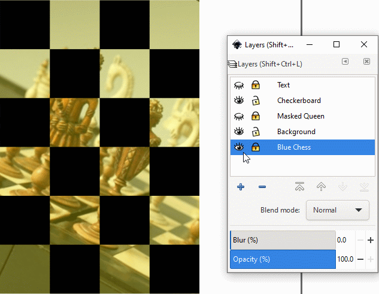
Preparing layers for masking.
The Checkerboard mask is one compound path and is situated above the
Background layer, which how you want them to be — the mask is always
above the object so it can “cookie-cut” the image immediately
underneath it.
Select both the Checkerboard mask and the Background images by choosing
Edit > Select All.
Choose Object > Clip > Set. The parts of the yellow-colorized
background image underneath the black squares remain. The original colors of
the Blue Chess background fill the spaces where the white squares were.
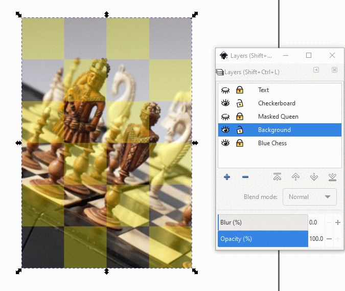
Applying the mask.
Now give the Blue Chess image a strong blue hue to contrast with
the yellow.
Unlock the Blue Chess layer and lock the Background
layer.
Choose Extension > Raster > Colorize…. We used the color
Wheel to choose blue with an Alpha (opacity) value of
40 percent. When you are satisfied with the color and opacity you
chose, click on the Apply button and then Close.
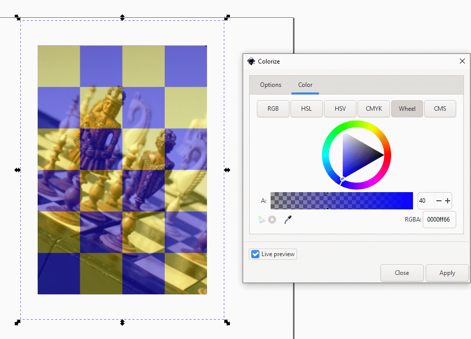
Blue Chess image colorized blue.
Choose File > Save.
Editing a Masked Image
The contrast between the blue and yellow squares of the background is low.
The focus of the card is supposed to be on the Queen chess piece — the
title of the card is, after all, “The Queen’s Gambit.” It
makes sense to have the background more subdued in comparison with the
coloration of the Queen and highlight the Queen so that she “pops”
visually out of the picture.
In the Layers palette, unlock both the Background and
Blue Chess layers if they aren’t already unlocked. Lock the
Text, Checkerboard, and Masked Queen layers so they
won’t be affected by the colorizing you will do next.
Choose Edit > Select All in All Layers to select all objects in those
layers that are unlocked. Objects in locked or hidden layers will not be
selected.
Choose Extensions > Raster > Colorize…
Set cyan C = 60, magenta M = 60, yellow Y = 0,
black K = 61, and opacity A = 40. The composite background
image is given a subdued dark purple overlay.
Click on the Apply button, then click on Close.
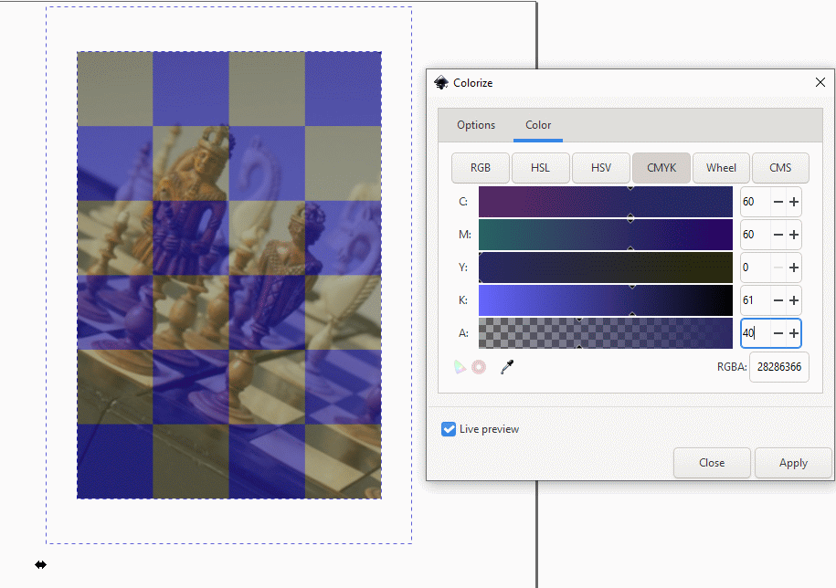
Colorizing the background layers a transparent dark
purple.
The Queen and King chess pieces need a little more definition to
light and dark areas — they are a little too subdued.
With the two background layers still selected (reselect them if they
have been deselected using Edit > Select All in All Layers), choose
Filters > Color > Lightness-Contrast….
In the Lightness-Contrast dialog box that appears, set
Lightness = 1.00 and Contrast = 1.20.
Click Apply, then Close.
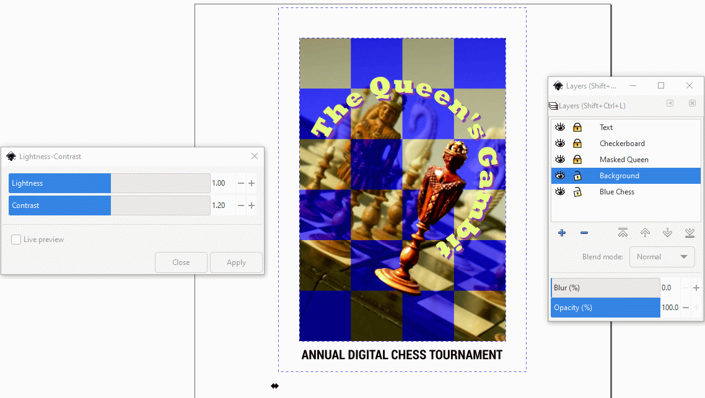
Adjusting brightness and contrast of the two background
images (colors already adjusted).
You will now adjust the bright and contrast settings for the Queen
chess piece.
Unlock the Masked Queen layer and lock the Background and
Blue Chess layers.
Select the Masked Queen layer to make it the active layer.
Select the Queen chess piece image
Choose Filters > Color > Lightness-Contrast….
Set Lightness = 1.00 and Contrast = 1.20.
Click Apply, then Close.
See how the Queen stands out from the background and other chess
pieces.
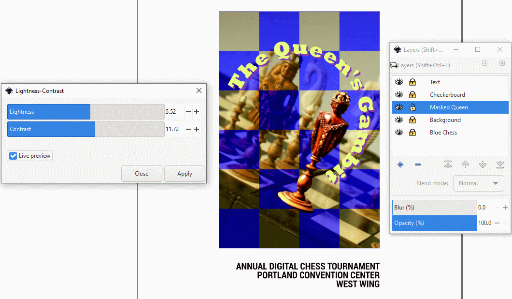
Adjusting brightness and contrast of the Queen chess piece
image"
The text at the bottom of the card should be simplified.
Unlock the Text layer and select the bottom text.
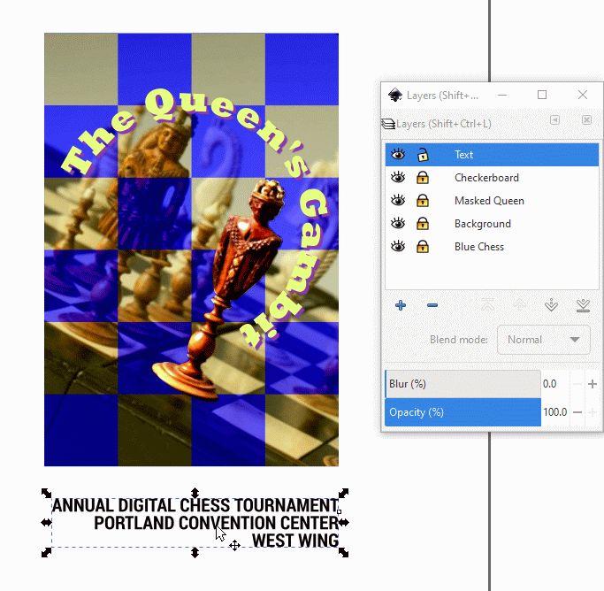
Selecting the bottom text.
Select the Text tool () in the toolbox and drag the tool
cursor across the bottom two lines of text to highlight them.
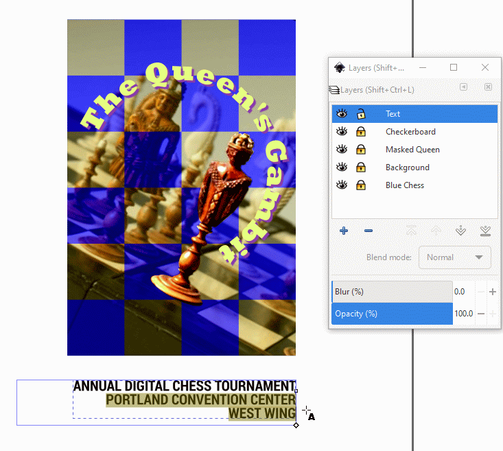
Selecting the bottom two lines.
Press the <Del> or <Delete> key to delete the two
lines.
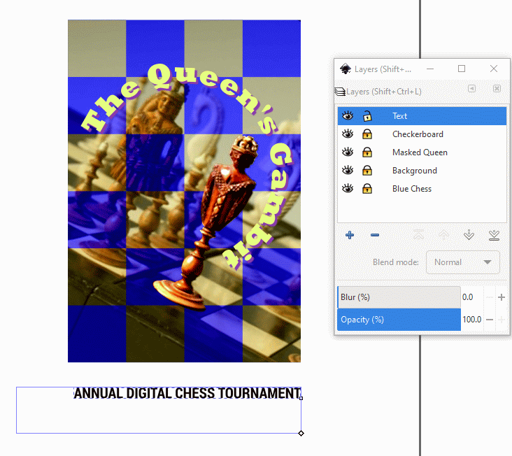
Deleting the bottom two lines.
Make the Select tool () active and use it to center the now
one line of text.
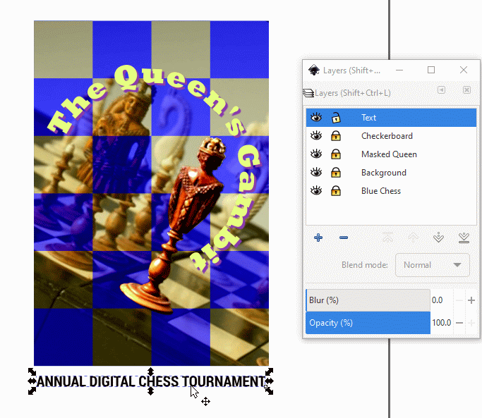
Centering the bottom line of text.
Dismiss the Layers palette unless you want to continue
working on the artwork.
Finished artwork.
File > Save and then File > Quit to exit Inkscape.
Exploring on Your Own
Now that you know how to import, mask, and apply color filters to an image
in an Inkscape file, you can import other images and apply a variety of
modifications to them. You can also create masks for images from objects you
create in Inkscape. For more practice, try the following:
Repeat the tutorial by making a copy of the Chess.svg file, call it
Chess2.svg. In addition to adjusting color in the component images,
apply transformation effects, such as shearing or rotating, or filters or
effects, such as one of the extension Distort filters/effects, to create
stylistic contrast between the two images in the checkerboard pattern.
Use the basic shapes tools or the drawing tools to draw objects to
create a compound path to use as a mask. Then place the Chess.svg image
into the file with the compound path, and apply the compound path as a
mask.
Create large type and use the type as a mask to mask a placed
object.
Review Questions
Describe the difference between linking and embeding a placed file in
Inkscape.
How do you create an opacity mask for an imported image?
What kinds of objects can be used as masks?
What color modifications can you apply to a selected object using
filters?
Review Answers
A linked file is a separate, external file connected to the Inkscape
file by an electronic link. A linked file does not add significantly to the
size of the Inkscape file. The linked file must accompany the
Inkscape file to preserve the link and ensure that the imported file appears
in the Inkscape file.
An embedded file is included in the Inkscape file. The Inkscape file size
reflects the addition of the embedded file. Because the embedded file is
part of the Inkscape file, there is no link to break.
You create an opacity mask by placing the object to be used as a
mask on top of the object to be masked. Then you select the mask and the
objects to be masked, and choose Object > Mask > Set.
A mask can be a simple or compound path. You can use type as a mask.
You can import opacity masks with from Gimp and Photoshop. You can also
create layer clipping masks with any shape that is the topmost object of a
group or layer.
You can use filters to change the color mode (RGB, CMYK, HSL, HSV, or
Grayscale) or adjust individual colors in a selected object. You can also
saturate or desaturate colors or invert colors in a selected object. You
can apply color modifications to placed images, as well as to artwork
created in Inkscape.

{kind=link}
{kind=link}
 ) in the Tool Controls Bar to make
the Layers dialog box active. Resize the dialog box to make all the
layers visible if needed.
) in the Tool Controls Bar to make
the Layers dialog box active. Resize the dialog box to make all the
layers visible if needed. ), Snap bounding boxes (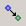), and Snap bounding box corners (
), Snap bounding boxes (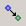), and Snap bounding box corners ( ) icons.
) icons. ).
).
 ) active and use it to center the now
one line of text.
) active and use it to center the now
one line of text.